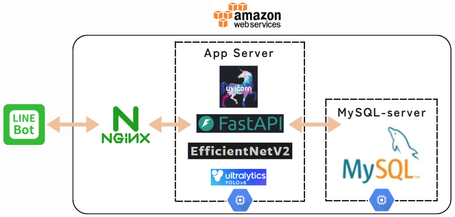
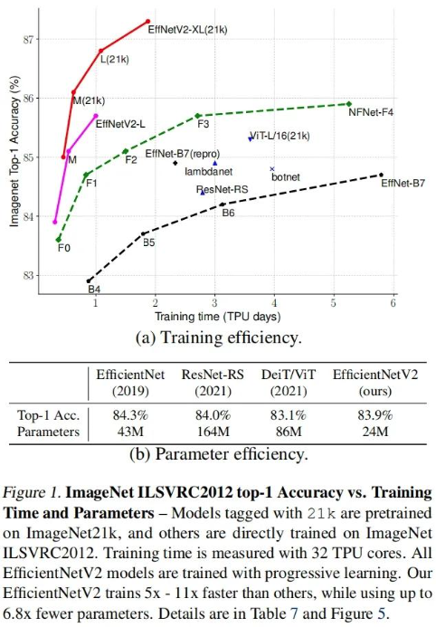
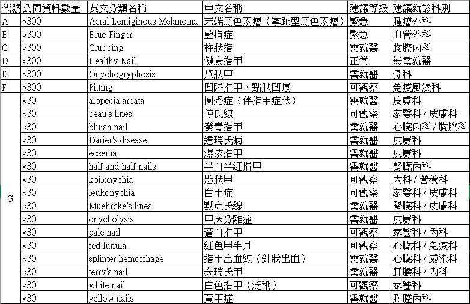
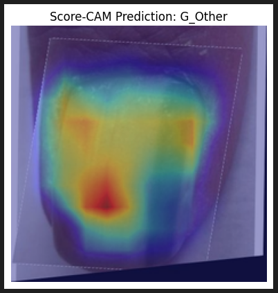
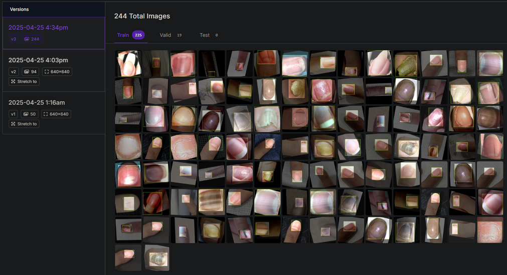
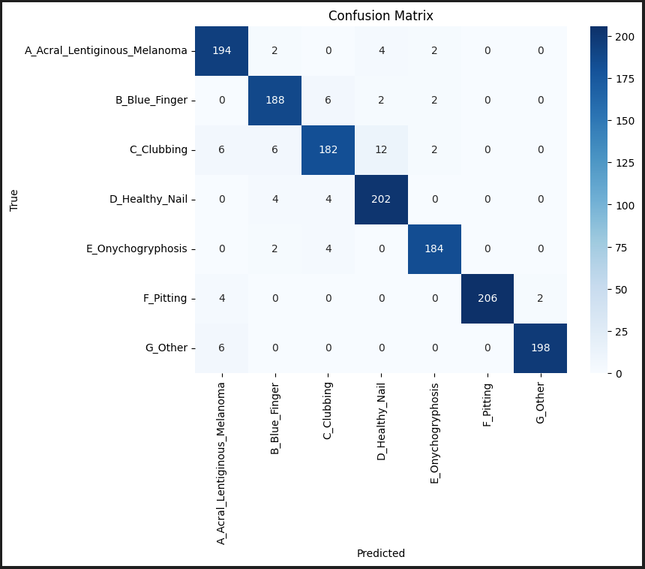
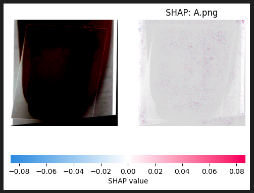
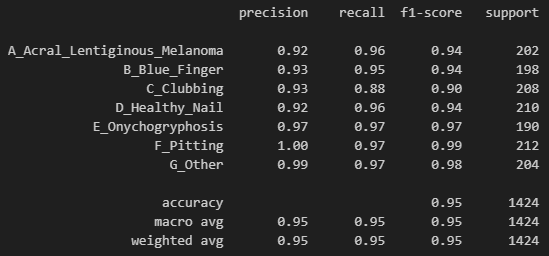
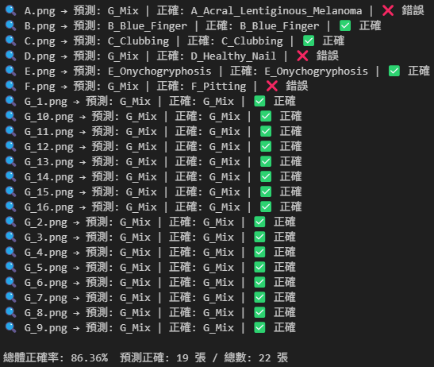

English ｜ 繁體中文
Nail Disease Detection — YOLOv8 Cropping + EfficientNetV2-CBAM, served via LineBot
用手機拍下指甲照片傳給 LineBot,系統自動裁切指甲區域、判別病變類型,並回傳初步判讀與就醫科別建議 —— 幫助不方便就醫或想先評估風險的使用者,減少延遲就醫時間。（輔助參考性質,非醫療診斷工具）
本專案針對指甲病變圖片進行分類:透過 YOLOv8 Nano 自動裁切指甲區域,接著使用 EfficientNetV2 + CBAM 模型進行病變判別,結果透過 LineBot 回傳診斷參考與建議。
用戶 LineBot 上傳指甲照片
│
▼
Nginx 反向代理(AWS EC2)
│
▼
FastAPI + Uvicorn App Server
│
▼
YOLOv8 Nano 自動裁切指甲區域 ← 只保留指甲,排除手指與背景
│
▼
EfficientNetV2-M + CBAM 分類 ← 病變類別判別
│
▼
MySQL(AWS RDS)紀錄結果
│
▼
LineBot FlexMessage 回傳判讀 + 就醫科別建議

系統架構:前後端分離,Nginx 反向代理 + FastAPI 推論服務 + MySQL 紀錄。
| 類別 | 技術堆疊 |
|---|---|
| 指甲偵測 | YOLOv8 Nano(自動裁切指甲區域,平均 < 200ms) |
| 病變分類 | EfficientNetV2 + CBAM 注意力模組 |
| 訓練框架 | PyTorch(Focal Loss、Mixup / CutMix 資料擴增) |
| 可解釋性 | Score-CAM、SHAP、Confusion Matrix 錯誤分析 |
| 後端部署 | ONNX 模型匯出 + FastAPI + Uvicorn + Nginx,架設於 AWS EC2 / RDS(MySQL) |
| 介面 | LineBot + FlexMessage |
開發過程不是「一路成功」,而是一連串「遇到問題 → 驗證 → 修正」。以下是幾個關鍵節點:
解決方式:採用前後端分離架構,透過 AWS EC2 部署 Nginx 作為反向代理,並以 FastAPI + Uvicorn 建立 App Server,整合 YOLOv8 進行圖像裁切與 EfficientNetV2-M 進行分類推論,最終結果寫入 MySQL 資料庫。兼具可擴充性、非同步處理能力與佈署效率,適用於資源有限的即時 AI 應用場景(架構圖見上方「系統架構」)。
解決方式:EfficientNetV2 參數少、準確率高,訓練速度是其他模型 5～11 倍,效能最佳。

EfficientNetV2 與其他模型的參數量 / 準確率比較。
解決方式:資料收集階段發現,含健康指甲的 21 種類別中有 15 種罕見病變樣本數 < 30 張。將這 15 種整合為「少見特殊病變」單一分類,並將就醫科別指定為這些病變較常看診的皮膚科。

常見與少見病變的樣本數分布。
解決方式:使用 Focal Loss 對少數類別加大權重,減少多數類別主導 loss 的情況。
解決方式:透過 Score-CAM 顯示模型關注的區域,檢驗其判斷是基於指甲病變,而不是手指背景。

Score-CAM 視覺化模型關注區域。
解決方式:執行人工標註流程 —— 將資料圖片上傳至 Roboflow 人工標示指甲區域,以標註結果訓練 YOLOv8 模型,再用此模型將所有圖片資料重建(只保留指甲區域),最後以重建後的圖片重新訓練辨識模型。

Roboflow 人工標示指甲區域。
解決方式:應用 Mixup 與 CutMix 進行資料擴增,強化模型泛化能力,並解決特定場景下的 overfitting 問題。
解決方式:透過 Confusion Matrix 分析,發現模型容易誤判末端黑色素瘤、杵狀指與凹陷指甲,針對這三類進行樣本補強。

Confusion Matrix:定位最容易互相誤判的類別。
解決方式:導入 SHAP 對輸入圖像做遮罩分析,視覺化模型認為重要的影像區域,提升可信度與透明性。

SHAP:像素層級的重要性視覺化。
解決方式:額外加入前處理流程 —— 用戶上傳照片先經 YOLOv8 Nano 裁切、只保留指甲位置,確保辨識模型關注正確區域。
解決方式:引入 CBAM 注意力模組強化模型特徵關注力,提升病灶區辨識準確性 —— 分類評估結果平均 95%,實測準確率上升至 86%。

分類評估結果(平均 95%)。

真實場景實測準確率(86%)。